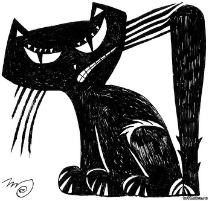
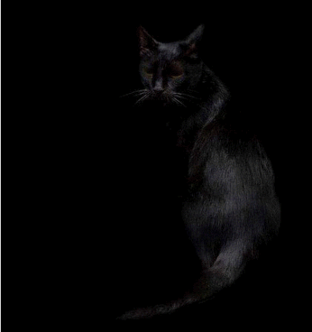
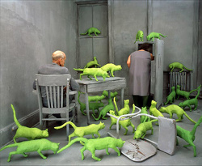

Как правильно:Искать чёрную кошку в тёмной комнате
На правах рекламы: эта страница содержит 0% правил и указаний Википедии.

Чёрная кошка
Чёрная кошка затаилась в тёмной комнате

Объект почти не виден.
Математические методы
Метод инверсивной геометрии
Помещаем в заданную точку квартиры клетку, входим в неё и запираем изнутри. Производим инверсию пространства по отношению к клетке. Теперь кошка внутри клетки, а мы — снаружи, в том месте, где ранее находилась кошка.
Топологический метод
Заметим, что связность комнаты, во всяком случае, не меньше, чем связность тора. Выворачиваем комнату наизнанку. Теперь кошка вне комнаты.
Метод дихотомии
Разделяем комнату на две равные части, теперь кошка находится в одной из них. Выбираем эту половину, делим её пополам. Продолжаем до тех пор, пока кошка не сконцентрируется в точке.
Метод недопустимой операции
Разделить кошку на ноль, после чего она станет бесконечно большой, так что её будет невозможно упустить.
Задача Иосифа Флавия
Запускаем в комнату девять нечёрных кошек. Расположим всех их, включая чёрную, в круг, и предположим, что должна умереть каждая вторая, считая по часовой стрелке. Согласно отсчёту, выжившая кошка — пятая. Проверяем, чёрная ли она. Если нет, повторяем решение, сдвигая точку отсчёта на одну кошку вправо. Проделываем до тех пор, пока пятой кошкой не окажется чёрная.
Физические методы
Метод Шрёдингера
В любом случае существует положительная, отличная от нуля вероятность, что кошке надоест сидеть в комнате, и она выйдет оттуда. Сидите и ждите.
Термодинамический метод
- Через выход из комнаты натянем полупроницаемую мембрану, которая пропускает через себя всё, кроме кошек.
- Последовательно прогоняем через выход находящиеся в комнате предметы.
Альтернативные термодинамические методы
- Понизить температуру в комнате до абсолютного нуля (0°K). Таким образом, кошка обездвижена, и её можно легко схватить.
- Повысить температуру в комнате выше критической точки. При этом кошка приобретёт достаточную энергию, чтобы самостоятельно покинуть комнату.
- Передать комнате достаточно большое количество энергии. После установления термодинамического равновесия кошка приобретёт такую удельную интегральную светимость, что она может быть легко зарегистрирована невооружённым глазом.
Метод активации

Радиоактивных кошек видно за версту
Облучим комнату медленными нейтронами. Внутри кошки будет наведена радиоактивность, и её станет видно.
Метод дифракции
Заставить комнату излучать имеющимися в ней предметами. На выходе из комнаты поставить дифракционную решетку с ячейками в форме кошки. Через некоторое время кошка вылетит из решетки в клетку за ней.
Метод распада
Если взять комнату за тяжёлое ядро, то оно распадётся. Изучая продукты распада по предполагаемой массе кошки, можно отобрать частицы, которые подходят на роль кошки. Затем нужно дать частицам мышь, и если частица поглотит мышь, то кошка найдена.
Принцип суперпозиции
Согласно этому принципу, кошка как бы внутри комнаты, но вроде как бы и снаружи. А если кошка как бы снаружи комнаты, то она как бы найдена.
Метод Хармса
Физически уничтожаем комнату вместе с кошкой.
Теперь задача неразрешима. Покидаем комнату и идём добывать вязаную шаль.
Инженерные методы
Метод крокодила с радиомаяком
Выпустите в комнату крокодила, оснащённого радиомаяком. Когда крокодил найдёт и проглотит кошку, найдите крокодила по маяку, после чего извлеките кошку.
Метод сита
Построить большое сито с отверстиями, не превышающими размеры искомой кошки.
Процедить содержимое комнаты.
Комната останется на месте, а кошка окажется в сите.
Метод с применением нейронных сетей
Обучаем нейронную сеть путём показа кошек, пойманных другими методами. Обученная нейронная сеть будет способна ловить кошек без вмешательства человека непостижимым для него способом. Остаётся разместить сеть в тёмной комнате.
Эвристический метод
Затопите комнату. На единственном оставшемся клочке суши окажется кошка.
Примечание № 1: метод не работает для поимки кота-рыболова.
Примечание № 2: если вы ищете окрашеного в чёрный цвет морского котика, то затопление комнаты лишь усугубит дело.
Метод масс
Всеми возможными способами поместите комнату с кошкой в Конкорд. Когда самолет будет выполнять маневр «горка», то все предметы в комнате будут в состоянии ложного вакуума, то есть лететь вниз медленней чем кошка. Потом через окно комнаты подать под давлением воздух и ждать пока кошка не вылетит в дверь, заранее поставив туда клетку для кошки.
Компьютерные методы
Метод пузырьковой сортировки
- Создадим клетку, размерами близкую к кошке.
- Будем просматривать комнату с севера на юг, сравнивая попарно все встреченные объекты и меняя их местами, так, чтобы более крупный располагался к югу от меньшего. Через определенное число шагов все объекты в комнате окажутся отсортированными, а кошка будет соседствовать с клеткой, так что не составит особого труда запихнуть её туда.
Алгоритм северо-западного угла
- становимся в северо-западный угол Комнаты
- идём на юг ПокаНеКончится(Комната)
- поворачиваем на восток, делаем один шаг
- поворачиваем на север и идем на север ПокаНеКончится(комната).
Шаги 2-4 повторяются, пока не найдена кошка.
Примечание: настоящий программист обязательно разместит одну кошку в юго-восточном углу комнаты, чтобы быть уверенным, что рано или поздно алгоритм завершится.
SQL-метод
Представим, что комната — это SQL. Соответственно, чтобы найти кошку, надо задать
SELECT
б.id
,б.кошка
,а.x
,а.y
,а.z
FROM
комната а
join кошка б on а.id_объект = б.id
WHERE
а.свойства = 'тёмный' AND б.цвет = 'чёрный'
Языки программирования
- Общий метод ООП. Добавляем к классу «кошка» метод «поиск».
- Turbo pascal. Пpосматpиваем комнату полным пеpебоpом. Обнаpужив кошку, стpоим вокpуг неё клетку. Если в пpоцессе стpоительства кошка уходит, бpосаем pаботу с кpиком «Range Check Error».
- Си++. Пpоектиpуем клетку таким обpазом, чтобы кошка была её составной частью. Пpи инициализации клетки кошка автоматически генеpиpуется внутpи.
- C#. Лезем в MSDN и ищем класс «кошка» с примерами применения.
- Delphi. Пишем во все конфеpенции: «Hаpод, где скачать компонент, котоpый ищет чёрную кошку в тёмной комнате?».
Hardware метод
Железячник покупает в зоомагазине кота, делает ему опеpацию по смене пола и долго пытается запихнуть его в скворечник.
Грамматический метод
Необходимо составить грамматику таким образом, чтобы кошка была лексемой особого типа. После чего сгенерировать на её основе парсер. Следует воспользоваться полученным лексером и выполнить лексический разбор. При этом возможна итерация полученных лексем, так что кошка легко попадётся.
Метод cut&paste #
- загрузить/сгенерировать клетку;
- просканировать комнату на наличие кошек;
- при обнаружении кошки скопировать её в клетку.
Интернет-методы
- Пользователь Интернета
- Зайдите в Google, Яндекс или другую поисковую систему.
- В строке Search напишите «тёмная комната», нажмите кнопку «искать».
- Теперь, когда найдена тёмная комната, отметьте галочкой «Искать в найденном», наберите «чёрная кошка» и снова нажмите кнопку «искать».
- Если по Вашему запросу ничего не найдено, попробуйте другой поисковик.
- Вебмастеp делает то же самое, затем создает документ «клетка.html» и прописывает в нём ссылку на найденное.
- Спамеp рассылает по всей комнате множество клеток, на каждой из которых бумажка: «Если вы чёрная кошка, пожалуйста, зайдите внутрь и закройтесь».
- Тpоянщик делает то же, что и спамеp, но вместо бумажки вешает внутpи клетки каpтинку с голыми котами.
Игровые методы
- Quest. Игрок ищет по всей комнате кошку, находит, кладёт в инвентарь. Затем ищет по всей комнате клетку, попутно пытаясь засунуть кошку в чайник, башмак, телевизоp, ведpо с кpаской и дpугие попадающиеся на пути ёмкости.
- Action. Геймер вооpужается супеpшотганом, плазмаганом, pэйлганом, нэйлганом, шестиствольным пулемётом и бензопилой. Пpочёсывает комнату, pазнося всё на своём пути. Ищет сpеди убитых кошку и пытается обнаpужить у неё в животе желтый ключ. Если находит, отпиpает им комнату и уходит на следующий уровень.
- Экономическая стратегия. Стpатег поднимает по всей комнате налоги, чтобы получить деньги на стpоительство клетки, ловчих юнитов и на кормление кошек. Наилучший результат — 100 % пойманных кошек и 0 % подохших.
Метод Photoshop
- Открываем тёмную комнату через фотошоп (необходимо сперва установить плагин с поддержкой кошек и темноты);
- Быстро блокируем все слои, дабы исключить побег кошки.
- Скрываем по очереди все слои до тех пор, пока не наткнёмся на слой с кошкой.
- Любым известным вам способом рисуем вокруг кошки клетку. На всякий случай. Тут тоже есть пара хитростей:
- Мастера советуют заранее приготовить кисть в виде клетки.
- Рисовать клетку лучше красным. Многие сперва ошибочно выбирают белый цвет, но красный и чёрный сочетаются всё же гораздо лучше.
- Разместить клетку стоит на отдельном слое.
- Если вы собираетесь долгое время держать кошку в таком состоянии (в архиве или на внешнем сервере), внутри клетки также необходимо нарисовать мышку. Ну или другую кошачью еду.
Химические методы
Сернокислая эссенция
Берем концентрированную серную кислоту (Н2SO4), растворяем в ней комнату, затем в малом пространстве выпариваем до эссенции, полученую эссенцию разводим в большом количестве воды, находясь в клетке.
Предупреждение: кошка появится сразу, поэтому нужно проявить осторожность и не пробовать раствор на вкус!
Электрохимический метод
Комнату с кошкой необходимо расплавить. При этом, комната и кошка диссоциируют на соответствующие ионы. В полученный электролит опустить электроды и подать на них электрический ток. При пропускании тока ионы кошки будут притягиваться к катоду, так что по прошествии достаточного количества времени вся кошка будет получена на соответствующем электроде.
Биологические методы
Зов инстинкта
- Ждём весну.
- Берём любого уже пойманного кота-самца.
- Методом подвешивания за хвост извлекаем боевой клич около входа в комнату.
- Ждём срабатывания у кота в комнате инстинкта сохранения территории. Либо, если мы ищем кошку, тогда ждём срабатывания у неё полового инстинкта.
- Ловим подопытного.
Выведение
- Берём тигра и выводим его уменьшённую копию.
- Методом выжигания цветных пигментов кожи (лазером со сверхсекретного спутника) делаем его чёрным.
- Кот готов!
Интрига
Пыточная
- В центре комнаты ставим коробку с надписью «в этой коробке ничего нет». А изнутри мажем клеем.
- Убеждаемся, что кошка не ведётся на клей и на наши каракули.
- Изучаем курс каллиграфии и раздел этикета «вежливость». Заменяем клей эротическим маслом лосьоном для массажа зубной пастой ароматическими выжимками лаванды.
- Передвигаем коробку лёгким пинком. Пишем на коробке «В этой коробке ничего нет. Добро пожаловать!». Передвигаем коробку лёгким пинком. Не помните коробку! Коробку надо помнить, особенно если есть риск не только потерять коробку, но и вовсе заблудиться в комнате.
- Убеждаемся, что кошка не понимает по-русски и что она понюхала эротическое масло лосьон зубную пасту лаванду. Кошка должна фыркнуть носом.
- В темноте изучаем бейсик курс кошачьего письменного языка.
- В правом верхнем углу комнаты ставим коробку с надписью «В этой коробке ничего нет, но внутри лучше, чем снаружи! Мур-р!», переведённой с базовым уровнем кошачьего языка. А внутрь бросаем свежие кишки сельди.
- Иногда кошка может слышно пукнуть, хотя ни один человек не зарегистрировал подобных фактов за всю историю. Этот звук ничего не означает. Убеждаемся, что кошка скептически фыркнула и поцарапала коробку. Значение фыркания не известно, но царапание — это не результат игры с кишочками, а результаты использования коробки для заточки когтей и попытки кошки переправить обращённые к ней слова.
- В темноте изучаем курс кошачьей каллиграфии и курс кошачьего символического языка. Берём циркулярную пилу. В зависимости от пола (при желании тут же можно изменить пол 1 на пол 2) используем её для того, чтобы первый раз за 7 лет и 18 месяцев поиска побриться или сделать педикюр.
- Прикладываем все силы и ловим кошку по всей комнате не боясь получить травму (получение травмы теперь неизбежно, поэтому придётся потерпеть и черпать силы в чудесной силе шоковой мобилизации и вдохновляясь расплывающимися перед глазами упоительных цветов разводами от ярости, полученных травм, гиподинамии, и(ли) рака лёгких.
- На последнем издыхании, борясь с кошкой, вспоминаем драматичность финала «Властелина Колец», сверхчеловеческим усилием воли (периодически вправляя выпадающее правое глазное яблоко, дабы не избежать его выпадения) гасим цветные разводы и доходим внутри в сознании свобственного погибающего существа до сцены последней борьбы с Горлумом, делаем под кошку стремительный подкат, пересиливаем её в элементе армрестлинга, прижимаем её к полу. Не навредите кошке! В нижнем партере основной элемент против кошки — удушение суки, но Вы уже без сил и только метод позволяет Вам побороть хотя бы кошку, а сука сильнее кошки. Поэтому используем третий (второй не этичен — прим. валидолед. ред.)по эффективности элемент для борьбы с кошкой в партере — метод запихивания в коробку.
- Кошка в коробке. Вы умираете в тёмной комнате. Задача решена.
- Теперь можно отключить сознание и погрузиться туда, где ещё никто не был (или не смог ничего рассказать). Приятного путешествия, мир Вашему праху. Как дополнительный яркий опыт самопознания, можно зарегистрировать собственную посмертную дефекацию, настолько ваша энергетическая составляющая теперь разогнана неравным противоборством с кошкой!
Рекурсивная
- Кладём на пол комнаты плотный целлофановый пакет. Формируем из него подобие укрытия.
- Ориентируемся по шуршанию пакета. Как только оно прекратится — кошка внутри.
- Если задача ещё не решена, входим внутрь пакета и помещаем там меньший пакет. Повторяем цикл до тех пор, пока кошка не окажется внутри достаточно малого пакета, затем берём пакет в руки. Кошка в пакете. Вы тоже.
- Для решения уже на втором пункте подбираем заранее пакет нужного размера в соответствии с общей теорией совпадения размеров кошки и целлофанового пакета профессора сравнелогии Граблина-Зозоя И. Ъ.
- Пояснение: как известно, ни одна кошка не преминет залезть внутрь целлофанового пакета.
Метод эволюции
Берём аквариум и ставим его посередине комнаты. Помещаем в аквариум сине-зелёную водоросль. Через N миллиардов лет в результате естественной эволюции получится чёрная кошка.
Лингвистические методы
Метод морфемного разбора
Известно, что кошка находится где-то в комнате, являясь её неотъемлемой частью. Последовательно отсекаем от комнаты все заменяемые части, как то: префиксы, соединительные гласные, флексии и постфиксы. Перед нами основа, полностью совпадающая с кошкой.
Метод синонимического ряда
Выстраиваем синонимический ряд к кошке. При этом разрешается использовать словарные дефиниции и различные части речи, поскольку у кошки мало синонимов. Просчитываем количество возможных синонимов и в конце синонимического ряда ставим клетку — там необходимо должна оказаться искомая кошка.
Метод переводчика
Переводим слово «кошка» на язык, в котором существа обозначаются сочетанием «предмет + его местонахождение». Исключаем слово, обозначающее местонахождение (комнату), получаем кошку.
Экономические методы
Рекламный метод
- Выпустите ролик: «Пришлите нам чёрную кошку и выиграйте кубический метр бриллианта».
- Ждите посылок.
Метод распродажи
Повесьте перед комнатой объявление: «Кошкам скидка 100 % на все товары! Колбаса и рыба в кредит, 0 % первый взнос». Ждите.
Метод букмекера
Два к пяти, что вы её не поймаете!
Громко крикните: «Два к пяти, что вы не найдёте кошку!». Ждите результатов.
Фонд по содействию поиску
Организуйте благотворительную вечеринку. Все средства от благотворительной вечеринки пойдут на исследование проблемы поиска кошек в тёмной комнате. При наличии дополнительного финансирования возможна подготовка экспедиции.
Социологические методы
Метод регистрации 1
Суть метода заключается в необходимости требовать у каждой чёрной кошки прописку в комнате. Кошку, не предъявившую паспорт с пропиской, ведём в участок и сажаем в клетку как нарушителя закона.
Метод регистрации 2
- Объявляем всех собак лицами без гражданства.
- Остальных требуем зарегистрироваться.
- Теперь останется только фильтровать кошек от прочей живности в процессе регистрации.
Преимущество данного метода в том, что он будет работать и в дальнейшем, притом не только на кошках.
Метод делопроизводства
- Создать комиссию по вопросу поиска кошек в тёмной комнате.
- В комиссию включить подкомиссию по вопросу целесообразности поиска кошек в тёмной
- комнате, которая вынесет решение о целесообразности поиска кошек в тёмной комнате.
- Комиссия по вопросу поиска кошек в тёмной комнате вынесет резолюцию на основании решения подкомиссии по вопросу целесообразности поиска кошек в тёмной комнате.
- Из состава комиссии по вопросу поиска кошек в тёмной комнате выделить рабочую группу для оперативного рассмотрения самой тёмной комнаты.
- После вынесения решения о существовании тёмной комнаты, создать согласительную комиссию, в состав которой входят представители от кошек из тёмной комнаты.
- Согласительная комиссия поиска кошек в тёмной комнате разрабатывает квоты на поимку кошек в тёмной комнате.
- Квоты на поимку кошек в тёмной комнате утверждается советом старейшин тёмной комнаты.
- Для выбора совета старейшин тёмной комнаты следует провести выборы совета старейшин, для чего создается избирательная комиссия по тёмной комнате, в работе которой участвуют международные наблюдатели.
- После проведения выборов комиссия по вопросу поиска кошек в тёмной комнате реорганизуется в Государственную Службу Котонадзора (приём по личным вопросам среда, четверг 18:00—19:00).
- Для контроля за Службой Котонадзора утверждается постоянно действующая депутатская комиссия, которая поручает вопрос поиска кошек в тёмной комнате Службе Котонадзора.
- Служащие Службы Котонадзора сами разберутся…
Философские методы
Эзотерическая философия
Для начала кошке необходимо самой найти себя. И осознать свой Путь.
Теология
Легче найти чёрную кошку в тёмной комнате, чем объяснить Библию.
Экзистенциализм
Переживание Поиска само по себе ценно. Сосредоточьтесь на этом.
Кинизм
А оно нам надо?
Прагматизм
Найдите, кому это выгодно, и пускай он и ищет (за сходную плату).
Бонифациизм
Залей всё белой краской.
Теперь чёрную кошку не найти и никто в этом не упрекнёт.
Если упрекнул, скажи: «Было лень».
Он поймет. Никто. Да.
Античная логика
Чёрной кошки в тёмной комнате нет. Доказательство:
- Аксиома: ночью все кошки серы
- Дано: комната тёмная
- Следовательно, любая кошка, находящаяся в тёмной комнате, серая.
- Следовательно, чёрной кошки в тёмной комнате нет.
Нигилизм
Кошки нет, комнаты нет, поиска нет.
Адвайта-Веданта
Кошка и комната это суть одно и тоже, отличие между ними иллюзорно, если найдёшь комнату, значит, в любом случае найдёшь кошку.
Буддизм-Мадхъямака
Нет кошки, нет комнаты, но они не одно и тоже, хотя может и одно (это невозможно определить). Кошка условно-существует, только когда условно существует комната, и наоборот. Если это понять, сразу найдутся все кошки и все комнаты. Существует как минимум 12 способов понимания (можно найти в соответствующих источниках).
Хасидизм
Акт Сокрытия кошки означает, что Ваше самоотрицание не было ещё полным. Проникнитесь величием Творца до полного стирания «я». И бесконечное, которое может скрыть бесконечное, раскроет все тайны.
Диалектика I
- Тезис: Кошки в комнате нет.
- Антитезис: Кошка в комнате есть.
- Синтез: истина в том, что кошка либо есть, либо её нет.
Диалектика II
- Тезис: Если ничего не видно, возможно, ничего нет.
- Антитезис: Там, где нет «ничто», есть что-то.
- Синтез: Если что-то есть, но его невозможно найти с помощью зрения, можно найти с помощью чего-то другого. Ищите наощупь.
Логический позитивизм
Комната есть «чёрный ящик», скрывающий кошку. Последовательно исключите из рассмотрения все явления, кроме искомой кошки, и она будет найдена.
Верификация и фальсификация
Найдите что-нибудь и проверьте, является ли оно кошкой.
- Верификация. Если оно мурлычет, как кошка, мяукает, как кошка, царапается, как кошка, и пускает искры, как кошка — это кошка.
- Фальсификация. Если Вы не сможете заставить это вести себя не как кошка — это кошка. Если оно не лает, не летает, не чирикает, не ест просо, не пылесосит, не стирает, не показывает мультфильмы — это кошка.
Театральные методы
Метод Станиславского
- Найти в себе чёрную кошку.
- Полюбить в себе чёрную кошку.
- Представить себя чёрной кошкой.
- Поверить, что Вы — чёрная кошка.
- Если не получилось, громко сказать «Не Верю!!!» и начать сначала.
- Если получилось, громко сказать «Мяу!!!» и вызвать врача.
Метод Высоцкого
- На выходе из комнаты помещаем сеть или клетку. Устанавливаем сеть/клетку таким образом, чтобы любая выбегающая из комнаты кошка оказывалась пойманной (за консультацией по этому вопросу можно обратиться к охотникам).
- Сверхэкспрессивно повторяем «Бы-ы-ыть?!!.. Или не бы-ыть?!!..», резко поворачиваясь при каждом возгласе попеременно то влево, то вправо на 360 градусов и выбрасывая согнутую в локте руку. Если Ваш артистизм скован, то для раскрепощения следует играть, надев поверх одежды розовую балетную пачку.
- Кошка в ужасе ищет спасения и; возможно, побившись лбом о стены; лётом выбегает из комнаты.
- Кошка поймана. Успокаиваем её «Сном в летнюю ночь» и настойкой валерианы. Допустимо ввести ей внутримышечно не более кубика галоперидола, заодно её забавно скрючит.
Психологические методы
Психоанализ
Вас беспокоит чёрная кошка? Вы хотите поговорить об этом?
Эксгибиционизм
Просто разденьтесь догола, показывая интимные места всем подряд. Санитары Кошка сама Вас найдёт. Ждите их кошку. В противном случае отправляйтесь за кошкой на Канатчикову Дачу (не сомневайтесь).
Этология
Проявляя хаотическую активность, кошка рано или поздно сама найдёт дверь. Используйте время ожидания для наблюдения за процессом поиска кошкой выхода, и это поможет Вам понять схему поведения человека.
Практическая психология
Представьте себе, что Вы кошка. Встаньте на четвереньки. Принюхайтесь. Куда бы Вы, кошка, хотели пойти? Идите… идите… Идите… МЯУ!!!!!!!
В следующий раз будьте осторожны, чтобы не наступить на кошку.
Гештальт-терапия
После неудачного применения предыдущего метода у Вас остался незавершённый гештальт. Будем с этим бороться. Лягте поудобнее, расслабьтесь. Вспомните… Вы — чёрная кошка, Вы идёте по тёмной комнате… Что Вы там ищете?.. Вы ищете чёрную кошку. А Вы кто? Вы — чёрная кошка… Вы ищете себя. Протяните руки себе навстречу. Дотроньтесь до себя. Обнимите. Вы чувствуете облегчение? Вы чёрная кошка и Вы себя нашли. Это прекрасно!
Практические методы
Световой метод (опорный)
- Включить свет в комнате.
- В случае, если электрического света нет, то ради устранения препятствий для естественного света следует сломать стены и потолок.
- Если на дворе глухая ночь, просто наденьте очки ночного видения.
Световой метод (развёрнутый)
- Описание: метод с глухо зацикленным разветвлённым алгоритмом. Разработан в 1929 г. Запрещён организацией Greenpeace.
- Алгоритм:
- Сделать незримые объекты комнаты зримыми.
- Осветить комнату.
- Включить свет в комнате. В случае, если электрического света нет, то ради устранения препятствий для естественного света следует сломать стены и потолок.
- Привнести для освещения комнаты осветительный прибор достаточной мощности излучения.
- Использовать средства «ночного видения».
- Решить упрощённую задачу по поиску видимой кошки.
- Завладеть кошкой. Взять кошку на руки.
- Дождаться захода солнца и устранить искусственное освещение комнаты, чтобы убедиться, что комната тёмная.
- Если комната была разрушена на этапе 1.1.1., восстановить её.
- Задача решена. Вы в тёмной комнате, кошка у Вас в руках.
- Результат подхода:
- Если кошка искусственная или игрушечная, следует выбросить её из комнаты. (Это называется «фальш-подход»). Вы теряете 500 очков.
- Если кошка мертва, Вы выбываете из игры.
- Если кошка жива, следует выпустить её из рук и громко воскликнуть «Haff!», выражая торжество и мотивируя кошку оторваться от преследования. Вы получаете 5000 очков!
- Перейти к первому пункту.
- Дополнительные очки начисляются за серию чистых подходов, а также за особую комбинацию: 5 подряд живых кошек — 10000 очков; 17 живых кошек, две игрушечных, 8 живых, одна игрушечная, 5 живых — 50000 очков за комбо; 1783 подряд кошек живые — супербонус: 550000 очков + путёвка в Диснейленд на одну персону, также в награду за этот результат коэффициент начисления очков каждый раз повышается на 0,013.
- Примечания:
- Следует запастись кошками — их придётся заменять в процессе поиска. Искать мёртвую или физически отсутствующую кошку в тёмной комнате не интересно, это может привести Вас в уныние.
- Рано или поздно Вы погибнете от голода, жажды, усталости (желаемое подчеркнуть ногтем на мониторе) или у Вас кончатся деньги. Во втором случае следует купить ещё денег и продолжать с момента прервания вечного поиска, в первом случае следует рассказать номеру ICQ666666666 о загробной жизни.
- Предостережения:
- Уныние, усиливаясь, потенциально может усугубиться вплоть до тяжёлого душевного расстройства, требующего стационаризации.
- Убийство животного — уголовное преступление. Кошка — животное.
- Реклама: УК РФ. Покупайте наши рекламные буклеты в книжных магазинах в разделе «Право». Все права защищены.
Метод звуковой детекции
Закройте дверь, ведущую в комнату. Кошка, оставшаяся на час без воды, еды, туалета и человека в роли заточки для когтей, будет орать так, что не составит труда войти в комнату и найти её.
Метод тыка
Ходите по комнате и тычьте пальцем во всё подряд, пока не найдёте кошку. Не прикладывайте большую силу: есть риск сломать палец об стену или заработать укусы средней тяжести об кошку.
Житейский метод
Нужно всего лишь встать ночью и пойти в туалет — и обязательно на нее наступишь.